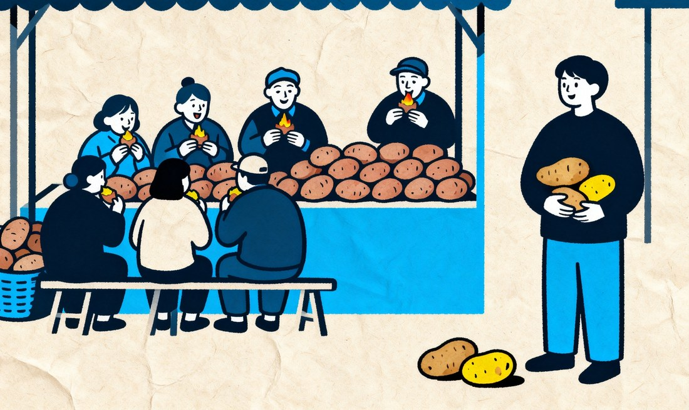
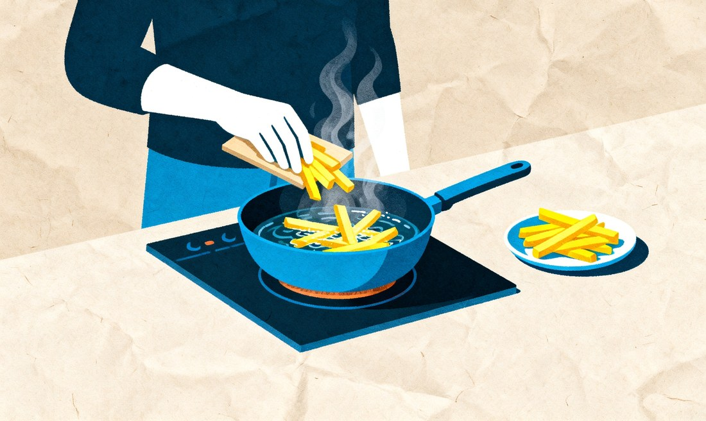
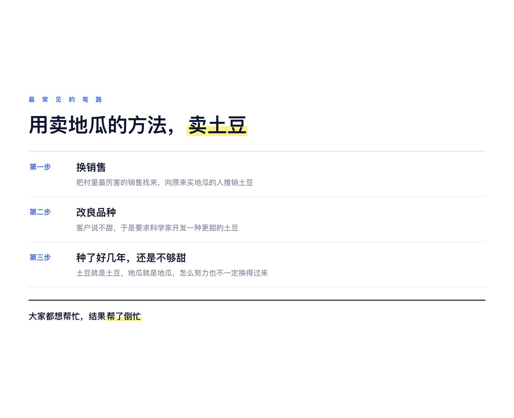
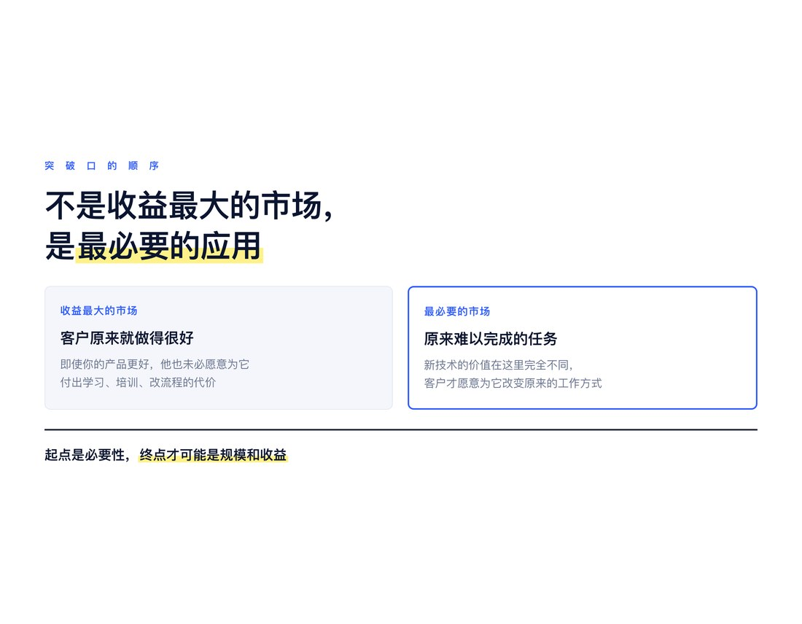
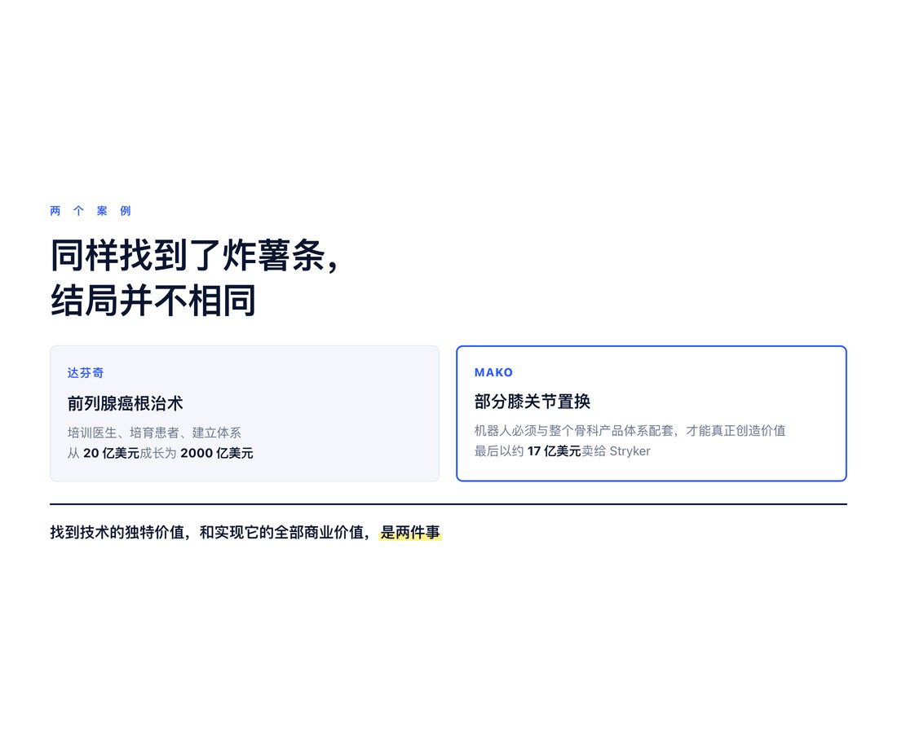
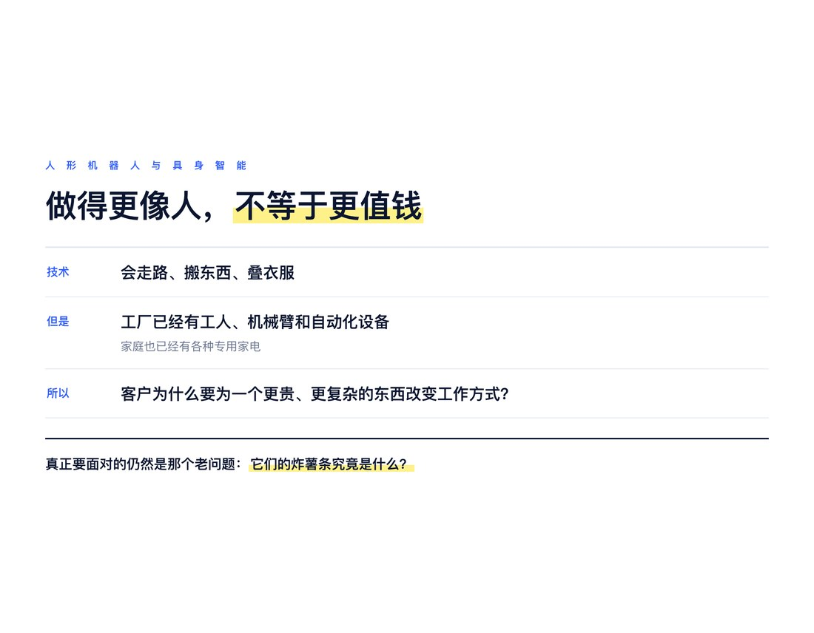
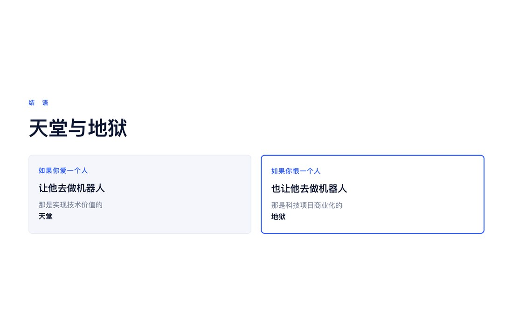

Random Thoughts
● ● ●
一、土豆为什么卖不出去？
很多人不理解科技商业化的困难。
相当多的投资人不理解，特别是今天，许多领导也不理解。
但是，科技商业化其实是可以很简单地说明的。我拿土豆和地瓜举个例子。
比如说，有个村子，大家种了很多地瓜，大家也都喜欢吃烤地瓜。
今天来了一个科学家，带来一种新东西，叫土豆。
科学家说，这东西好啊，产量高，又有营养。
但是大家不信。
有人试着买了几个，拿回去烤了烤，说能吃，但是不好吃，还是吃烤地瓜。
所以土豆卖不出去。

于是村长想了想，为了帮科学家卖货，把村里最厉害的销售介绍给科学家，让他帮忙推一推。
销售也真是努力，让全村人都试了一遍。
但大家的反馈还是一样：不好吃。
销售又努力争取了一下，村民终于说，如果再甜一点就好了。
于是销售问科学家：
“土豆能不能更甜一点？你能不能开发出一种更甜的土豆？这样我们就能像地瓜一样好卖了。”
科学家也很努力，种了好几年，还是没成功。
土豆还是不够甜，卖不出去，最后烂大街了。
后来，有个人捡了几个没人要的土豆。
他发现，这东西烤着虽然不好吃，但毕竟能吃，而且不要钱。
于是拿回家试着做。
其中一个人试着把土豆切成条，放到油里炸，发现非常好吃。
然后他就开始卖炸薯条。
没想到，炸薯条在村里火了。
大家都开始吃炸薯条，土豆也终于卖出去了。

这个故事听起来很傻，但其实科技商业化中，就是这么回事。
而且，出现的问题也是一样的。
● ● ●
二、大家都想帮忙，却帮了倒忙
首先，科技肯定是有价值的啊。
没有价值，当初科学家研究它干什么？
但是，科技有价值，不代表它一定能挣钱。
新科技产品卖不出去，客户不愿意买，一定是有原因的。
要是没有原因，哪有创业机会呢？
这一点很重要，因为一切解决问题的根源，是认识问题。
最可笑的其实是销售卖土豆，结果按照卖地瓜的方法来卖。
因为土豆不够甜，就要求科学家改良土豆。
科学家努力了几年，还是不够甜。
但这其实是科技企业商业化中最常见的弯路。
大家都想帮忙，但是帮了倒忙。
为什么？
因为大家对新事物的认识是这样的：
第一，大家只见过地瓜。
第二，土豆跟地瓜又都是地里长出来的。
所以大家自然认为，它们应该卖给同样的客户，有同样的功能。
既然地瓜是烤着吃的，土豆自然也应该烤着吃。
既然客户嫌土豆不够甜，那就把它弄甜一点。
这也是为什么，很多科技公司商业化不成功，换了创始人，由商业化团队主导后，反而可能死得更快。
因为商业化团队强行把土豆当地瓜卖，研发团队也跟着白忙了很长时间。

问题不在于大家不努力，也不在于销售经验不够丰富。
问题在于，商业化团队和投资人不愿意承认，土豆跟地瓜之间存在着本质性的 Gap。
他们总觉得，这个 Gap 可以通过产品改良、销售努力来填补。
但土豆就是土豆，地瓜就是地瓜。
你怎么努力，也不一定能把土豆变成地瓜。
那么，这个 Gap 应该如何填补呢？
其实多少需要一点运气。
就像炸薯条，并不是科学家研究出来的，也不是销售团队根据客户反馈规划出来的。
而是有人偶然尝试，发现土豆原来可以这样吃。
所以，科技商业化的关键，首先是承认 Gap 的存在，然后找到填补这个 Gap 的方法。
这个 Gap 填补得有多巧妙，商业化就有多成功。
而不是把土豆变成地瓜。
这个道理大家很容易明白，因为大家知道什么是土豆，什么是地瓜，也知道应该如何吃。
但如果今天给你一种从来没见过的新土豆，它需要一种你也不知道的新吃法呢？
我们做得不一定比那个卖地瓜的销售强。
大家其实都一样。
因为我们今天知道炸薯条好吃，是因为已经有人发明了炸薯条。
但在炸薯条被发明之前，谁知道土豆还可以这样吃呢？
科技商业化最困难的，不是知道炸薯条好吃，而是在还没有炸薯条的时候，发现炸薯条。
● ● ●
三、手术机器人，就是另一个土豆的故事
比如说手术机器人。
其实是完全一样的。
传统手术器械就是地瓜，手术机器人就是土豆。
当手术机器人出现时，大家的第一个想法，自然就是把手术机器人卖给医院。
也就是卖给那些原来烤地瓜的人。
但是医院说了，这个东西好是好，但是贵啊，复杂啊，手术效果跟手工也没有多大区别啊。
其实就是能吃，但是不够甜。
于是企业是不是就要把手术机器人弄得更便宜呢？
但你怎么弄，也很难比传统手工手术更便宜啊。
这就是许多手术机器人企业遇到的问题。
然后政府支持啊，投资人帮忙啊，找销售啊，做市场啊。
公司还请来了经验丰富的销售总监。
原来是卖大型医疗设备的，人脉多，经验丰富，医院都熟悉。
但是再努力，还是不够甜啊。
还是卖不出去啊。
于是，土豆故事的高潮就来了。
Intuitive Surgical 最初重点关注的是二尖瓣修复手术。
这很合理，因为二尖瓣修复是一种复杂、精细的手术，从技术上看，机器人很适合。
但技术上适合，不代表商业化就容易。
后来，在多个应用方向的探索中，前列腺癌根治术成为了达芬奇早期商业化的重要突破口。
因为传统腹腔镜前列腺癌手术难度很大，机器人却能够帮助医生完成复杂的微创操作。
这就像一个人突然发现，土豆原来炸着吃很好吃。
今天，我们都知道炸薯条好吃。
但在手术机器人刚出现的时候，谁知道它的“炸薯条”会是前列腺癌手术呢？
所以，科技商业化中的“炸薯条”，其实有着极高的认知壁垒。
即使今天你知道达芬奇在前列腺癌手术中取得了成功，也未必真正理解它为什么成功。
假如你是公司的 CEO、投资人，或者坐在董事会里的董事。
我们做一个假设。
当时这家公司只有20亿美元的市值，而未来可能成长为一家价值2000亿美元的公司。
这时，你真的知道应该怎么做吗？
即使有人告诉你前列腺癌手术是正确的方向，你就一定知道应该怎么做吗？
未必。
如果你不理解它为什么有价值，不理解如何实现这种价值，你仍然可能犯错。
即使一家价值2000亿美元的公司交到你手上，也可能被你毁掉。
这就是科技商业化真正的认知壁垒。
但故事还没有结束。
● ● ●
四、发现炸薯条，只是把地里的土豆捡了回来
如果你觉得理解了为什么是前列腺癌手术，就能赚到2000亿美元，那也不是。
因为发现前列腺癌手术的应用价值，其实只是相当于把烂在地里的土豆捡了回来。
后面的问题还有很多。
首先，只有一个村民会炸薯条，你的土豆卖给谁呢？
所以你得教会全村人炸土豆。
然后，你发现炸土豆需要油。
于是你开始卖油。
而且炸薯条要不断用油，所以卖油也是一门生意。
然后你还可以卖炸锅啊。
但是光有炸锅也不行，你还要教大家怎么炸。
于是你开始推广，教大家炸薯条。
可是村民说了：
第一，我怕学不会。
第二，我怕炸出来不好吃。
于是你说：
“包教包会！炸锅可以先送给你，不好吃再退给我。”
村民又问：
“那这个炸锅，能炸地瓜吗？”
你说：
“当然可以啊！买油就行。但是每年必须买我一斤土豆。”
于是，越来越多的村民开始使用炸锅。
有人炸土豆，有人炸地瓜。
大家都开始买油、买炸锅，也开始学习怎么炸东西。
后来，你又回到了最初发现土豆种子的那个村子。
这时候，你不仅卖土豆，也卖地瓜，还卖油、卖炸锅，甚至教村民怎么炸地瓜。
你发现，自己已经不再只是卖土豆了。
你建立了一整套新的商业体系。
但这个故事大家都能明白。
换成手术机器人呢？
● ● ●
五、不是简单地卖机器人，而是帮助医院建立手术业务
发现前列腺癌手术的应用价值，其实只是把地里的土豆捡了回来。
接下来，你还得教会全村人炸薯条。
换成手术机器人，就是培训医生。
但是医生说了：
“我没用过，不会做。而且没有患者，医院也没钱买啊。”
所以，你要降低医院购买设备的门槛。
可以借，可以租。
还要培训医生，让更多医院能够开展机器人手术。
但这还不够。
因为即使医院有了机器人，医生也学会了，没有患者，医院还是赚不到钱。
所以，你还得向患者做广告。
告诉患者，哪些医院有机器人，哪些医生会做机器人手术。
这不是空想。
Intuitive Surgical 和 MAKO 都开展过面向患者的市场推广。
为什么一家卖医疗设备的公司，要花钱向患者做广告？
因为医院买机器人，不只是为了拥有一项技术，而是为了开展手术业务。
医院没有足够的手术量，就难以承担机器人的成本。
所以，你不能只是把机器人卖给医院，然后等医院自己想办法。
你还要帮助医院培育市场，让患者了解这种新的手术方式。
当然，医疗宣传必须有临床证据支持，患者是否适合机器人手术也必须由医生判断。但企业帮助医院建立患者对新技术的认知，本身就是商业化的一部分。
只有患者来了，手术做好了，医院挣到钱了，你的机器人才能收到款。
这就像卖土豆的人，不仅要教村民炸薯条，还得想办法让更多人愿意买炸薯条。
只有炸薯条有人买，村民才会不断购买土豆、油和炸锅。
所以，你不是简单地把产品卖给客户，而是帮助客户建立一门能够赚钱的生意。
随着越来越多的医院学会机器人手术，有了患者，也能够持续获得收入，机器人就逐渐形成了市场。
但这里还有一个问题。
患者是有上限的。
前列腺癌手术的患者不可能无限增加。
为了继续增长，你开始把机器人推广到更多手术。
例如妇科手术、普通外科手术，以及其他成熟的腹腔镜术式。
这就相当于回过头来卖炸地瓜。
这时候，情况已经完全不同了。
医院已经有机器人了。
医生已经学会使用了。
围绕机器人的培训、器械、耗材和服务体系已经建立起来了。
原来需要付出巨大代价才能改变的工作习惯，现在已经成为日常工作的一部分。
所以，即使机器人在其他手术中只是带来改良性的价值，也可能具有商业吸引力。
最初做不成的市场，现在却可以做成了。
这时候，可能有人说：
“你看，我当初的战略方向一直都没错啊！”
可是问题恰恰在这里。
战略方向正确，不等于商业化路径正确。
同样的产品、同样的客户、同样的市场，为什么当初做不成，后来却做成了？
因为客户已经改变了。
他们的工作方式改变了，学习成本降低了，新的使用习惯建立了。
而你自己也改变了。
你不再只拥有一种新技术，而是拥有了围绕这种技术的完整商业体系。
所以，虽然看起来又回到了原来的市场，但实际上已经不是原来的生意了。
如果你不理解为什么当初做不成，后来却做成了，即使把一家价值2000亿美元的公司交给你，你也可能再次犯错。
● ● ●
六、不是用最大的收益当突破口，而是用最必要的应用当突破口
这里其实有一个非常重要的原因。
任何一个新东西，特别是颠覆性的技术出现时，它的应用代价都是极大的。
因为它要改变客户原有的工作方式。
客户不仅要花钱买，还要学习，要培训，要改变习惯，要调整原来的流程，还要承担新的风险。
所以，为了让客户愿意承担改变习惯的成本，新东西不能只是“更好”，而必须是“必要”，甚至是“非用不可”。
这里的必要，并不是说在物理上没有它就绝对做不了。
而是说，它必须为某一类客户创造足够独特、足够重要的价值，让客户觉得，即使要改变原有习惯，付出学习和转换的代价，也值得。
这就是为什么，我认为颠覆性技术商业化的突破口，不应该首先寻找收益最大的市场，而应该寻找最有必要性的市场。
因为在那些原来就能够把事情做得很好的地方，即使你的产品更好，客户也未必愿意改变。
但在那些原来难以完成任务的地方，新技术的价值可能就完全不同。
所以不是用最大的收益当突破口，而是用最必要的应用当突破口。
突破之后，再建立体系。
当用户已经学会使用新技术，新的工作方式已经成为习惯，你再用这种新的方式去改善原有的工作。
这时，即使只是改良性的收益，也开始显示出来了。
因为客户已经形成了新的习惯。
原来需要付出的学习成本、转换成本和风险，已经大大降低。
所以，最初做不成的市场，后来反而可以做成。
这就是为什么土豆一开始卖不出去，后来却不仅能卖炸薯条，还能卖炸地瓜。
颠覆性技术商业化的起点和终点，可能是完全不同的市场。

起点是必要性，终点才可能是规模和收益。
如果颠倒了这个顺序，即使最终选择的市场是正确的，也可能在到达之前就已经失败了。
● ● ●
七、当年，我在 MAKO 时，就面临着同样的问题
所以，我们又回到了土豆的商业化故事。
这时候，我们似乎都明白了。
但手术机器人完全是一样的逻辑，这个逻辑却并不简单。
因为它存在专业与科技的壁垒，又使得试错极其昂贵。
在土豆的故事里，试错失败了，不过是浪费几个土豆。
但在手术机器人领域，一次商业化方向的错误，可能意味着几年的研发时间、巨额资金投入，以及大量临床和市场资源的浪费。
而且，试错的代价越高，大家就越希望通过分析、经验和管理来避免错误。
可是，真正的商业化突破口，又往往不是从已有经验中能够直接推导出来的。
当年，我在 MAKO 机器人公司时，就面临着同样的问题。
我们其实已经找到了自己的“前列腺”。
那就是部分膝关节置换。
我们发现了机器人的独特价值，也开始培训医生、销售设备、推广手术。
但是，我们没有建立起完整的商业化体系。
这里说的没有体系，并不是没有机器人，也不是没有销售和培训。
而是机器人必须与整个骨科手术产品体系配套使用，才能真正创造价值。
我们有自己的产品，但市场不容易接受。
如果配合别人已经成熟的产品，机器人又不得不依赖别人的体系。
所以，机器人虽然有价值，却很难独立建立起完整的商业模式。
这就像你已经找到了炸薯条，也造出了炸锅，却没有建立起完整的卖油、卖食材的生意。
而且，我们也还没有真正走到“炸地瓜”的阶段。
也就是把机器人推广到规模更大的成熟关节置换市场。
最后，我们以大约17亿美元的价格，把 MAKO 卖给了 Stryker。
17亿美元当然不是一个小数字。
但从我个人的经历来看，我们当时只是找到了自己的“炸薯条”，却还没有独立完成整个商业化过程。
后来，Stryker 利用自己成熟的骨科产品和商业体系，继续发展 MAKO，并将它推广到更大的手术市场。
我们找到的是技术的独特价值，而真正实现它的全部商业价值，还需要建立完整的产业体系。
所以，同样是手术机器人，达芬奇与 MAKO 的故事并不相同。
但它们面对的是同样的问题。
找到“炸薯条”很困难。
让全村人学会炸薯条，建立卖油、卖炸锅的体系，也很困难。
最后，再回头卖炸地瓜，又是另一项挑战。
科技商业化不是找到一个正确的应用就结束了，而是要找到价值、建立体系，再把这种价值复制到更大的市场。

● ● ●
八、那么，今天的人形机器人和具身智能呢？
今天的人形机器人和具身智能，商业化会比手术机器人更容易吗？
我们已经看到许多人形机器人可以走路、搬东西、叠衣服，甚至完成一些过去只有人类才能完成的操作。
技术当然是有价值的。
但客户为什么要买呢？
如果工厂已经有工人、有机械臂、有自动化设备，如果家庭已经有各种专用家电，那么一个更贵、更复杂、还需要重新学习和改变工作方式的人形机器人，为什么是必要的呢？
我们是不是又在要求土豆变得更甜？
是不是又在找最有经验的销售，去向原来买地瓜的人推销土豆？
是不是又在按照旧产品的标准，不断要求研发改进？
也许，人形机器人真正的“炸薯条”，根本不是我们现在最热衷展示的那些应用。
但问题是，谁知道它是什么？
即使某一天有人发现了它，我们又是否真正理解，为什么是这个应用，而不是另一个？
即使我们理解了，还能不能建立培训、推广、服务和商业模式，让这种新的价值被广泛复制？
机器人还需要维修、零部件、工具、软件和其他配套产品。
这些东西由谁提供？
不同任务需要不同的工具，不同工厂有不同的工作流程。
如果每进入一个新的应用，都要重新开发硬件、修改软件、调整工具和工作方式，那么商业化的成本又由谁承担？
这与当年 MAKO 面临的问题，会不会有某种相似之处？
如果这些问题都解决了，新的使用习惯也建立起来了，我们是不是又会回到最初那些看起来最合理、市场也最大的应用？
比如工厂里的普通劳动，或者家庭里的日常家务。
到了那个时候，也许又会有人说：
“你看，我当初的战略方向一直都没错啊！”
但如果不理解为什么当初做不成，后来又能做成，下一次还是可能犯同样的错误。
这里最值得警惕的是，我们可能把如何让机器人做得更像人，当成了如何让机器人创造商业价值。
但这两件事，并不是一回事。
人形机器人的技术能力越强，当然意味着潜在用途越广。
可是用途广，不等于客户愿意付费。
技术能完成一项工作，不等于它比客户原来的工作方式更有商业价值。
而找到一种独特的、客户愿意为之改变习惯的用途，也不意味着马上就能建立一个可持续的商业体系。
今天，人形机器人和具身智能已经获得了大量投资，也有许多优秀的科学家和工程师正在努力。
但我们有没有真正找到它的“前列腺”？
有没有找到一类客户，愿意为了这种新技术的独特价值，改变原有的工作方式？
即使找到了，我们有没有能力建立完整的产品和商业体系，让这种价值被大规模复制？
人形机器人和具身智能真正要面对的，仍然是那个老问题：它们的炸薯条究竟是什么？

● ● ●
九、科技商业化，真的只是给钱、找销售、找关系吗？
所以，讲完土豆、地瓜和手术机器人的故事，我们还觉得科技成果转化只是给钱、加大销售力度、找关系的问题吗？
资金当然重要。
销售当然重要。
政府支持、市场推广、管理经验，也都重要。
但这些东西，不能代替对新技术商业价值的认识。
因为新技术出现时，它的价值往往并不体现在旧产品原来的使用方式上。
我们习惯于用已有的产品理解新技术，用已有的客户判断市场，用已有的经验制定商业化战略。
这些经验能够帮助我们，也可能恰恰限制我们的认识。
于是，我们不断要求土豆更甜。
科学家努力，销售努力，投资人努力，政府也努力。
最后，却可能只是在不断增加把土豆变成地瓜的成本。
真正的科技商业化，首先要承认新技术与旧市场之间的 Gap。
然后，在探索中找到一个巧妙的方法，填补这个 Gap。
而且，发现新的应用还只是第一步。
你还要教会客户使用，帮助客户建立新的工作方式，让客户通过新技术获得收益，再围绕这种新的使用方式，建立完整的商业体系。
甚至，你可能还需要替客户寻找最终的消费者。
就像手术机器人公司，不仅要向医院卖机器人，还要培训医生，帮助医院建立机器人手术项目，甚至直接向患者宣传机器人手术。
而对于 MAKO 来说，我们还要解决机器人与整个骨科产品体系之间的关系。
这些问题都不是简单地把机器人做得更好、价格做得更便宜就能解决的。
这不是简单的产品销售。
你是在帮助客户创造新的价值，建立新的工作方式，并让这套方式能够持续运行。
只有客户能够持续获得收益，你的技术才有可能真正赚到钱。
最后，当新技术成为一种习惯，当围绕它的产品和商业体系已经建立起来，我们才有可能进入那些原来就存在、却始终难以进入的主流市场。
回头看，似乎一切都很简单。
甚至连最初选择的战略方向，也似乎一直是对的。
但如果真的回到那个时间点，在炸薯条还没有被发明之前，你真的知道应该怎么做吗？
这就是科技商业化真正的认知壁垒。
技术创新创造了可能性，但商业化需要我们认识这种可能性的价值，找到实现它的路径，并建立能够持续复制这种价值的体系。
它不仅需要知识、经验和管理能力，还需要探索、判断，以及一点运气。
而且，这种认知能力并不能简单地用资金买到，也不能仅仅靠更换一个经验丰富的销售团队获得。
今天，我们都知道土豆可以做炸薯条。
但如果现在给你一种从来没见过的新东西，你真的知道它应该怎么卖吗？
如果不知道，为什么我们总觉得，只要给科学家更多的钱，再找几个有经验的销售，就能够解决科技商业化的问题呢？
说到底，机器人是一种很特别的技术。
它有着令人兴奋的技术可能性，也有着异常艰难的商业化过程。
所以，我想用两句话结束这篇文章：
如果你爱一个人，让他去做机器人，那是实现技术价值的天堂。
如果你恨一个人，你也让他去做机器人，那是科技项目商业化的地狱。
